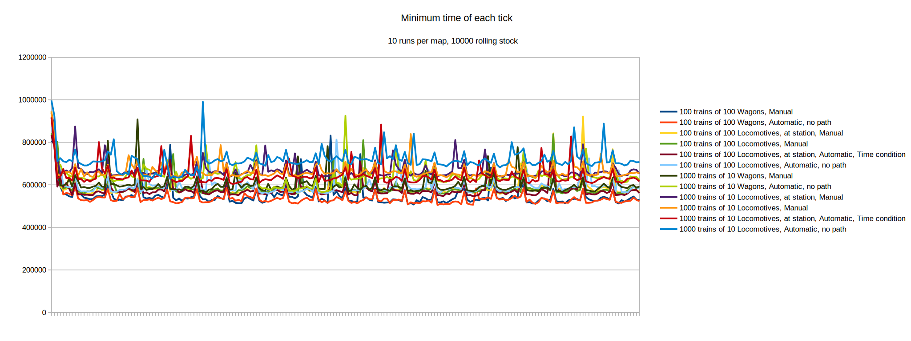

Stationary trains require very little update time. A large number of small trains is more computationally unfriendly than a smaller number of large trains. Wagons require less processing time than locomotives while stationary.
How much processing time do stationary trains consume? How much is consumed by wagons vs. how much by locomotives? While keeping number of units of rolling stock the same, are fewer longer trains more efficient than a larger number of shorter trains?
Each test map consists of 10000 rolling stock, either all wagons or all locomotives. All locomotives and wagons are horizontal (West to East). Locomotives are all fueled with three units of nuclear fuel. Maps consist of either 1000 trains of 10 wagons/locomotives, or 100 trains of 100 wagons/locomotives. Variations exist for trains in automatic and manual mode. For automatic trains with locomotives, tests include stopped at a station using the "time passed" condition, as well as no station and doing "No Path". Wagons only trains were put into automatic via the following command:
/c
for _, ent in pairs(game.player.surface.find_entities_filtered{name = "cargo-wagon"}) do
ent.train.manual_mode = false
end
I've also graphed the per-tick data of the tests.

All maps will be uploaded here.
For stationary trains, a smaller number of large trains is more UPS friendly than a large number of smaller trains. Wagons are more efficient than locomotives, even when stationary. Stationary trains are overall still very UPS efficient; even in the worst case in this test 10000 locomotives only used up 0.715ms of processing time. Another test will be required to see if this pattern of relative costs holds true for moving trains, or if the relative cost of locomotives vs. wagons increases further when trains are moving.
{kind=link}